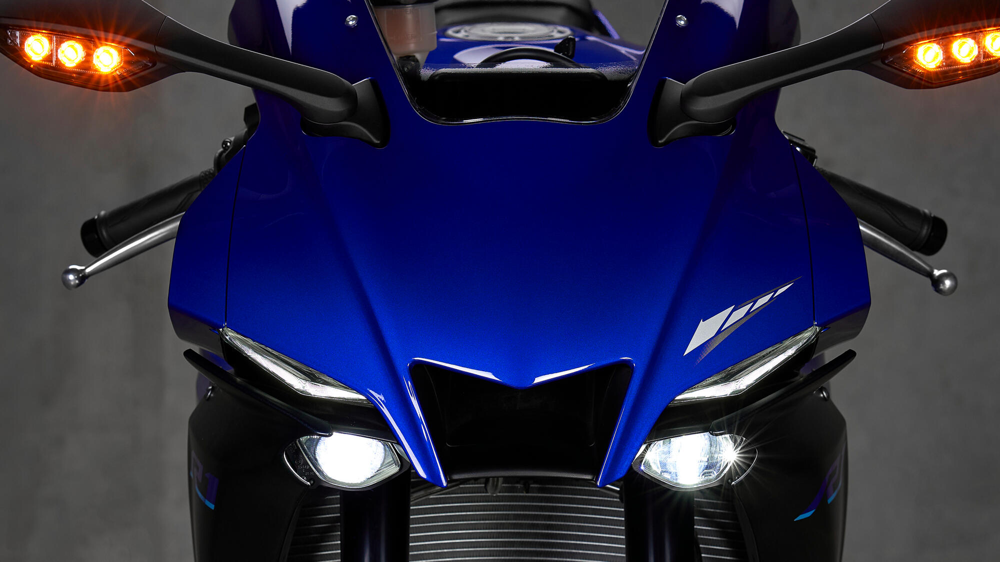
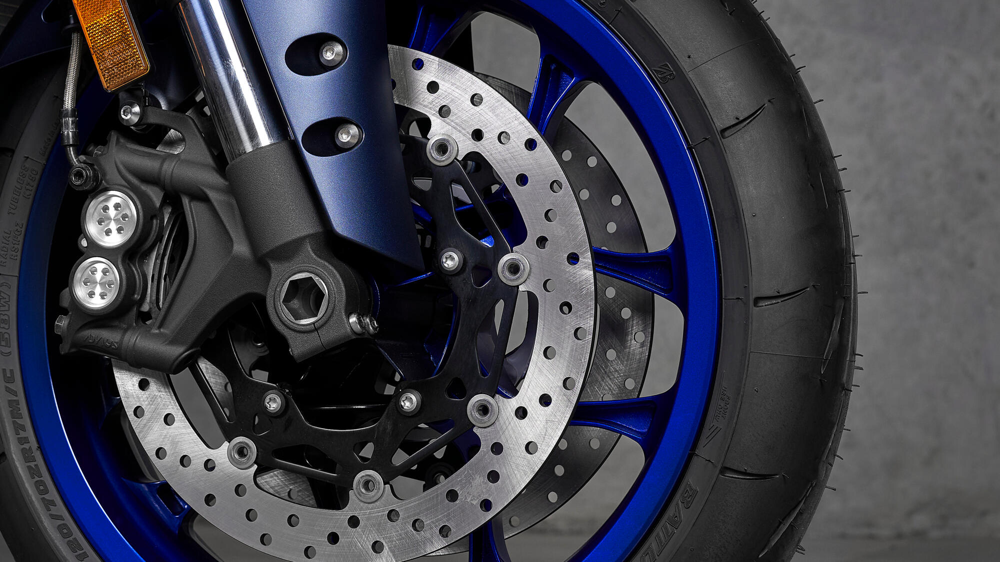

Caratteristiche Chiave
La Yamaha R1 è dotata di tecnologie avanzate, un motore potente e un design aerodinamico che la rende una moto unica nel suo genere.
Galleria Fotografica



Collegati con gli Appassionati
Unisciti a forum, social media ed eventi per condividere la tua passione per la Yamaha R1 e discutere delle ultime novità.
Top Speed della Yamaha R1
Scopri la potenza della Yamaha R1 e la sua velocità massima che la rende una delle moto supersportive più veloci al mondo.